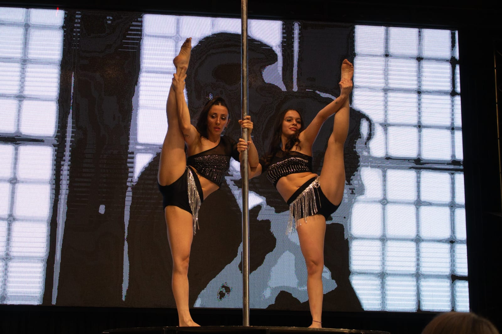

El Pole Sport es una disciplina que combina elementos de danza, acrobacia y fuerza física, utilizando una barra vertical como elemento central. Esta práctica no solo mejora la condición física, sino que también fomenta la creatividad y la expresión artística. Los participantes desarrollan habilidades de equilibrio, coordinación y flexibilidad mientras realizan movimientos fluidos y coreografiados alrededor de la barra.